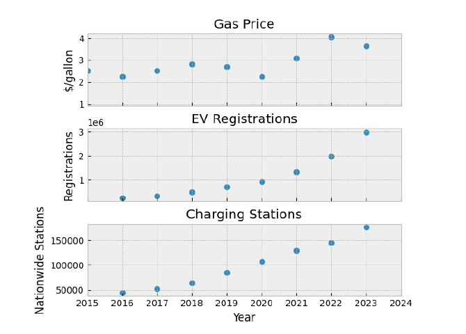
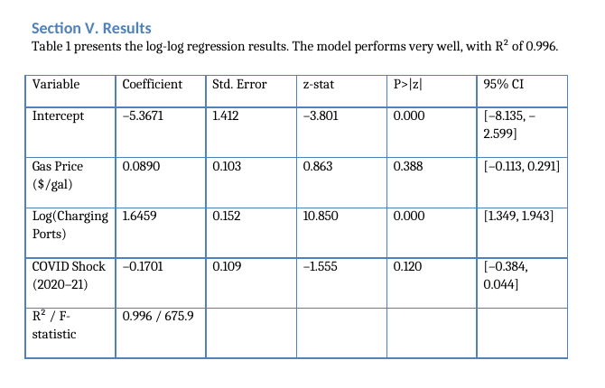

The question
Higher gasoline prices should make electric vehicles relatively more attractive, but that incentive may not matter if drivers lack convenient charging. This project tested whether charging availability acts as a practical gatekeeper for EV adoption and whether the apparent relationship between gasoline prices and adoption survives once infrastructure is included.

Data & approach
I combined publicly available data from the U.S. Department of Energy, the Energy Information Administration, and Census/FRED sources covering EV registrations, gasoline prices, charging infrastructure, and income. The analysis used log transformations and OLS regression with heteroskedasticity-consistent standard errors, plus a COVID-period indicator to account for unusual market behavior.
Results
The full model produced an R² of 0.996. Charging infrastructure was the dominant statistical signal: a 1% increase in charging ports was associated with roughly a 1.64% increase in EV registrations, while gasoline prices became small and statistically insignificant after infrastructure was included.

Interpretation
The analysis suggested that the simple correlation between rising gasoline prices and EV adoption could be misleading because both were trending upward over time. Once charging infrastructure was modeled directly, the price effect weakened sharply. The practical implication was that expanding charging access may be a more important adoption lever than relying on fuel-price incentives alone.
Limits
The final specification used a small national time-series sample and did not directly model state-level incentives, so the results should be treated as an aggregate association rather than a definitive causal estimate. A state-panel design with fixed effects would be a natural next robustness check.